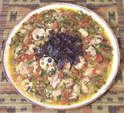

|
Chicken with MushroomsAfrica, Sub-Sahara | ||||
| Serves: Effort: Sched: DoAhead: |
4 main *** 1-1/2 hrs Yes |
An easy to make aromatic chicken dish sure to please. It's enjoyed in many African countries in the sub-Saharan region. I have served this at buffet parties and it has garnered outstanding comment. | |||
|
13 6 1 1/2 2 1-1/2 6 6 3 1 1/4 1/4 1/4 2 1/2 3 1/2 ------ |
oz oz in cl # oz oz oz t t t t c --- |
Chicken (1) Onion Serrano Chili Ginger Garlic Tomatoes Bell Pepper Mushrooms (2) Mushrooms White Lime Cinnamon Pepper, black Cumin Cloves Salt Scallions Parsley -- Garnish Basil Leaves |
For parties, 2-1/2 recipes will fill a 5 quart slow cooker for serving. Prep - (45 min)
|